JM-Orgue
JM-Orgue is a virtual pipe organ for Windows, macOS and Linux. It plays Hauptwerk and GrandOrgue sample sets directly, including large surround sets, and you play it with a MIDI keyboard, an organ console or the mouse. This guide walks through the program using screenshots of version 0.9.16.
© Martijn van der Kolk. The screenshots were made with demo organs and own test sets; network addresses, access tokens and user folders have been made unreadable.
1. Getting started
Installing
Download the installer of the latest release from the project's release page (for Windows JM-Orgue_<version>_x64-setup.exe) and run it. The installation is per user and needs no administrator rights. There is also an MSI package for Windows, a DMG for macOS and an AppImage or deb for Linux.
The program itself is free to use. The sample sets are not included: you get those from their makers. The start page of the library lists a few makers who offer sets free of charge.
Updating
JM-Orgue checks by itself whether a new version is available. If there is one, a notice appears at the top. Choose Update now: the program downloads the update, checks its signature, installs it and restarts. If you only want to download first, choose Download. You can also check by hand via App Settings → Update and feedback → Check for updates.
The three main screens
At the top are three tabs: Organ (playing), Organ Settings (everything that belongs to the loaded organ) and App Settings (everything that applies to the whole program). F1, F2 and F3 switch between them directly. The cross next to the organ name closes the organ and takes you back to the library.
2. The library
After starting you see the organ library: one card per organ with photo, name, builder, place and number of stops. Click a card to load the organ.
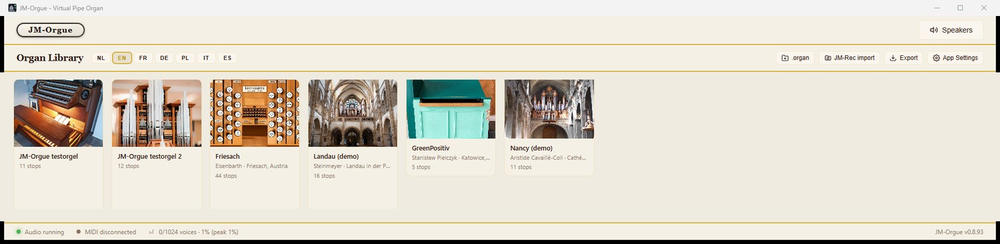
Adding an organ
- .organ: choose an organ definition (GrandOrgue
.organor a Hauptwerk definition). You choose the definition file, not the loose folder of samples: only the definition knows the stops, couplers, tremulants and any extra recording positions. - JM-Rec import: import a sample set made with JM-Rec.
- Export: turns a folder of samples into an organ definition (
.organ), which you can then load with the .organ button.
Card buttons: photo, search, remove
If you point at a card, three buttons appear at the top right of the photo: search a photo online (globe), choose an image yourself (camera) and remove from library (cross). Removing only takes the card out of the library; the files on your disk stay where they are. If you hold a card pressed for 3 seconds, the program searches the photo again.
Searching online shows a few freely usable photos from Wikimedia Commons, based on the name, builder and place stored in the set. Click a photo to adopt it; the source and licence appear under the card. If the set holds too little to find anything, type a search term yourself (church, town or organ name) in the field at the top of the window and choose Search.
3. Loading and playing an organ
Loading
When loading, JM-Orgue reads the beginning of every pipe recording into memory; the rest is loaded while you play. A large surround set can therefore take a moment; the progress bar shows how far it is.
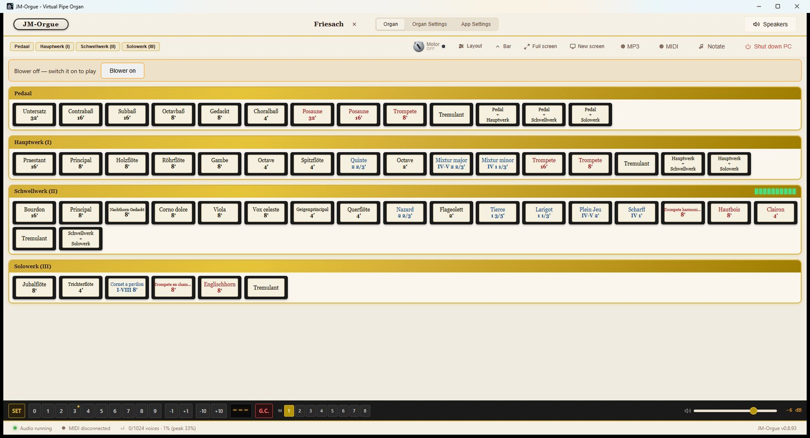
The blower
After loading, the organ blower is on by default as soon as the set has a blower recording, and you hear a soft wind right away. To practise in silence without that wind sound, switch the Blower button in the toolbar off; the yellow bar only appears when the blower is truly off. Which background sounds are on by default and how loud, you adjust from the toolbar with the small mixer next to the background-sounds button.
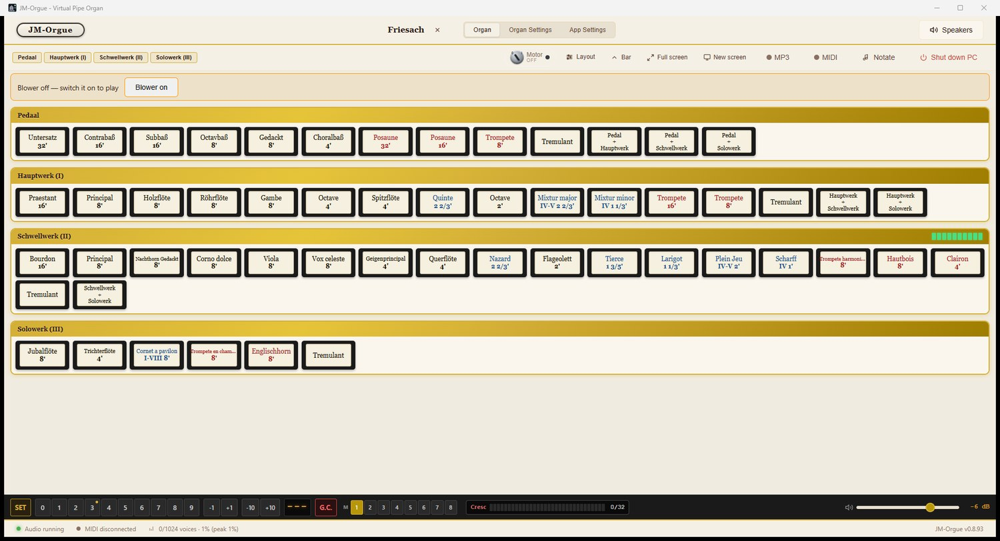
Stops, couplers and tremulants
Every division has its own box with its stops. Click a stop knob to draw it; drawn stops turn yellow. The colour of the name shows the family: reeds, for instance, are red, mixtures and quints blue. Each box also holds the tremulant and the couplers (for example “Hauptwerk + Schwellwerk”). A green bar on the right in the header of a division shows the position of the swell box.
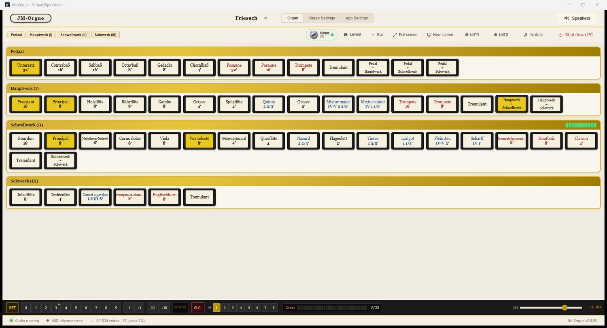
The setter bar
At the bottom is the setter bar, with the controls of an organ console:
| Item | How it works |
|---|---|
| SET and 0–9 | Press SET and then a digit to store the current registration; press just the digit to recall it. A small dot at a digit means a registration is stored there. |
| −1 / +1, −10 / +10 | Step to the previous or next registration, or ten further. |
| G.C. | General Cancel: all stops off. |
| M 1–8 | Memory levels: eight separate banks of registrations. |
| Cresc | The general crescendo (see chapter 7). The bar shows the current step. |
| Volume slider | Master volume. Double-clicking resets it to the default; with the scroll wheel you change it in steps of 1 dB. |
Every button of the setter bar can be linked to a button on your own console: right-click (or hold for 3 seconds) and then press the button on your console.
Learn the MIDI channel of a manual
You do not have to visit Organ Settings first: right-click the name of a division above the stops — or hold it for 2 seconds on a touch screen — and the program asks for the lowest and highest key of that manual. The channel is set without leaving the console.
4. The toolbar
Above the stops is the toolbar. On the left are the divisions (Pedal, Hauptwerk, …) as buttons: with them you show or hide a division. On the right are the functions below.
| Button | What it does |
|---|---|
| Blower | Organ blower on or off. |
| Layout | Opens the layout menu (see below). |
| Bar | Shows or hides the main bar with the tabs and the profile button. |
| Full screen | Console mode: only the stops and the setter bar (F11). |
| New screen | Opens an extra window with the same stops, for example for a second monitor or a second keyboard. |
| MP3 | Records what you hear. The recording goes to Documents\JM-Orgue-opnames. Click the red counter to stop; the program then tells you where the file is. |
| MIDI | Records what you play (notes only) as a .mid file. Click the blue counter to stop and choose where to save it. |
| Notate | Opens the notation window: notes appear while you play, with layers, overdub and editing. An existing MIDI file can be opened there too. |
| Shut down PC | Closes the software and the computer, after a confirmation; the last state is saved first. Right-click or hold for 3 seconds links the button to a button on your console. |
The layout menu
With Layout you adapt the display to your screen: Fit measures the button size so that all stops fit in view, the minus/plus buttons change the width and the height of the buttons, and you further choose divisions below or beside each other (vertical), round instead of rectangular buttons and the place of the couplers (in the division or in a bar of their own). The choice is remembered per organ.
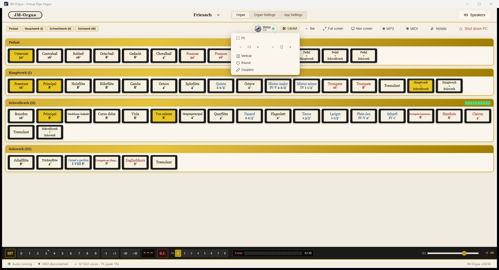
Full screen (console mode)
In this mode the title bar, the Windows taskbar and the main bar disappear: you see only the stops and the setter bar. At the top is a narrow strip with four buttons: Bars (bring the main bar back temporarily), Blower (on or off), Exit full screen and Shut down PC (close the software and the computer). F11 switches the mode on and off; Esc turns it off.
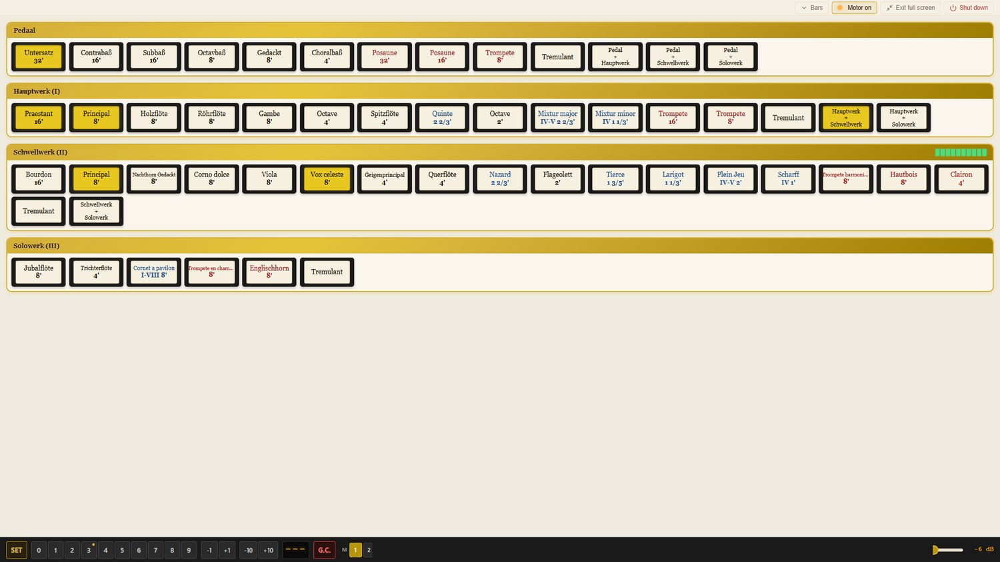
A second screen
New screen opens a window of its own that you can drag to another monitor, or leave small beside the main window. It has its own layout settings: if the buttons are too small, choose Layout and set the button width and height, or choose divisions below or beside each other.
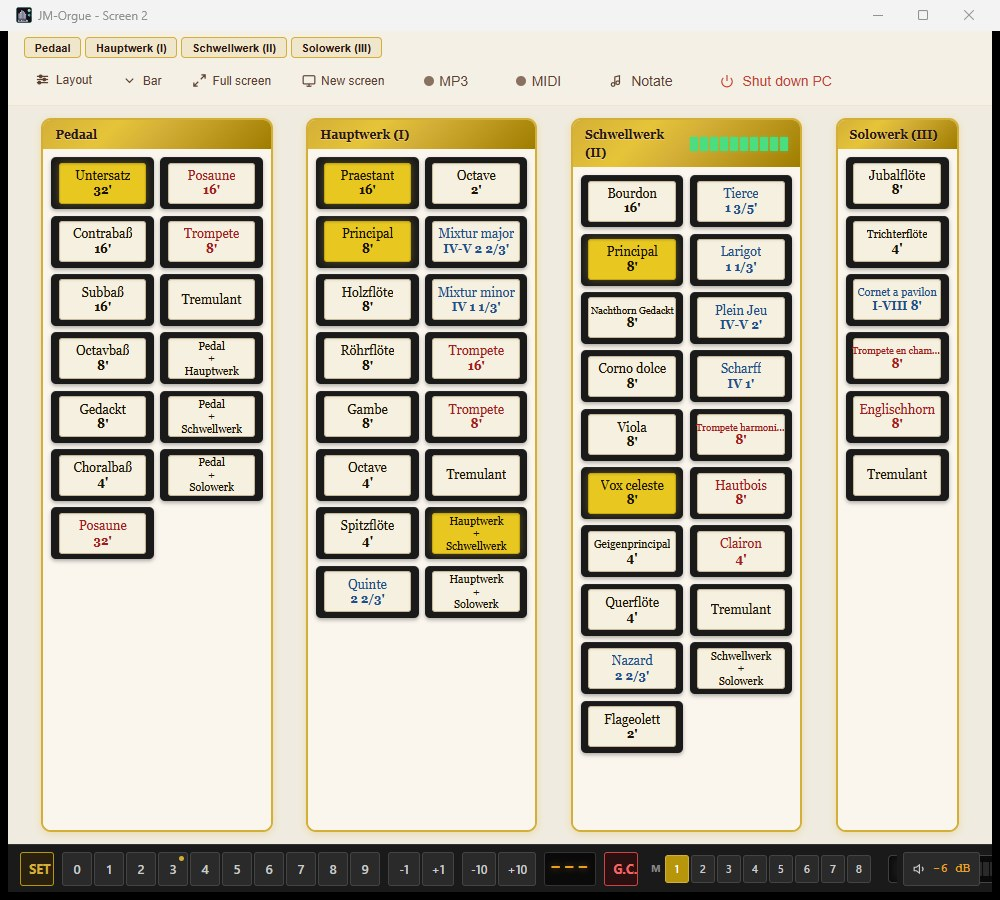
5. Several listening positions
Some sample sets were recorded at several places in the church, for example close, in front, halfway and at the back. Such a set shows the Perspective buttons in the toolbar, one for each position. Click a position to switch it on or off; you can let more than one sound at the same time. To the right of them is the listening position: the slider between “at organ” and “in the back” blends smoothly between the recorded positions.
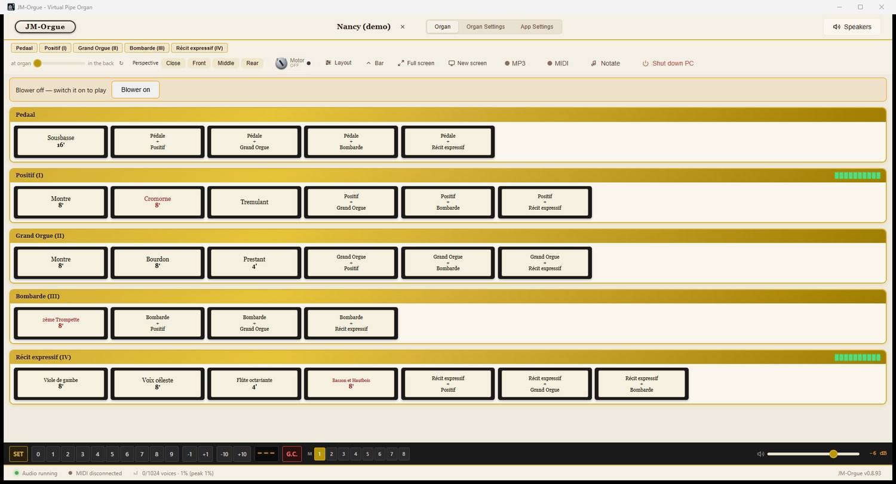
6. The setup wizard for a new organ
If you load an organ for the first time, the setup wizard “Set up organ” starts automatically. In six steps it goes through everything you have to connect for your own console. Everything can be changed later, and you can start the wizard again via Organ Settings → Routing → Wizard. Later closes the wizard and asks again the next time you open the organ; Skip (step 1) skips it altogether.
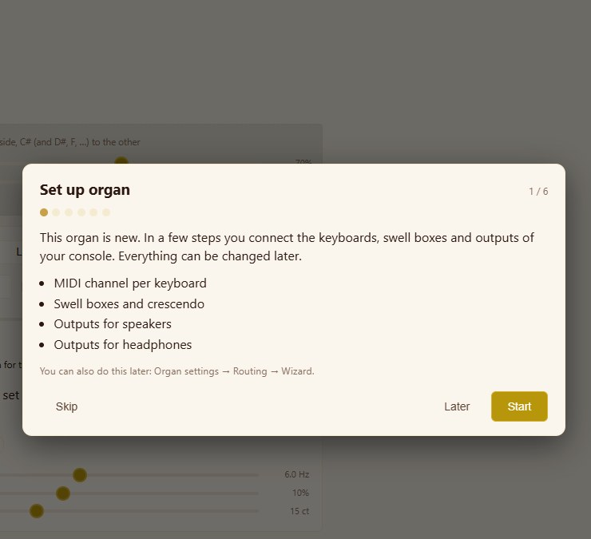
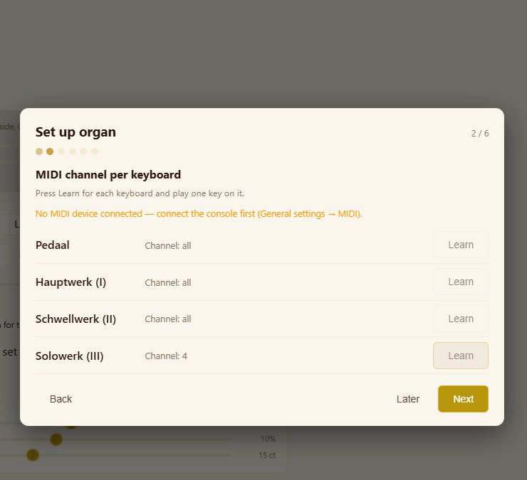
- Start: an overview of the steps.
- MIDI channel per keyboard: for each keyboard choose Learn and play a key on that keyboard. The program remembers the channel. The buttons only work when a MIDI device is connected (App Settings → MIDI); otherwise a warning is shown.
- Swell boxes and crescendo: choose Learn and move the pedal fully closed and fully open. The same goes for the general crescendo. If a set has swell boxes per rank (chapter 9), they appear here too.
- Outputs for speakers: choose the driver and the device, save them as the “Speakers” profile and choose per keyboard which outputs of your audio interface it sounds on. Below that are the same choices for the blower sound, the ambient noise and action clicks, the effect stops and the tremulant noise, as far as the set has them.
- Outputs for headphones: the same for the second profile, for example a headphone output. From then on you switch between the two profiles with the Speakers button at the top right.
- Done: the settings have been saved with this organ.
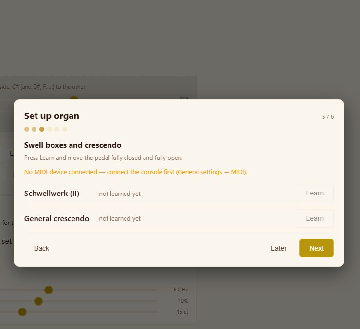
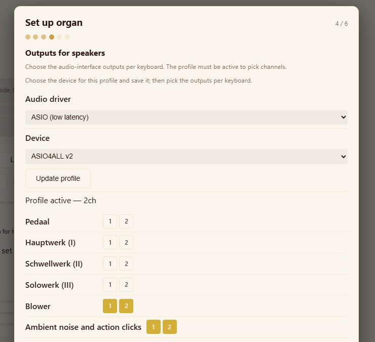
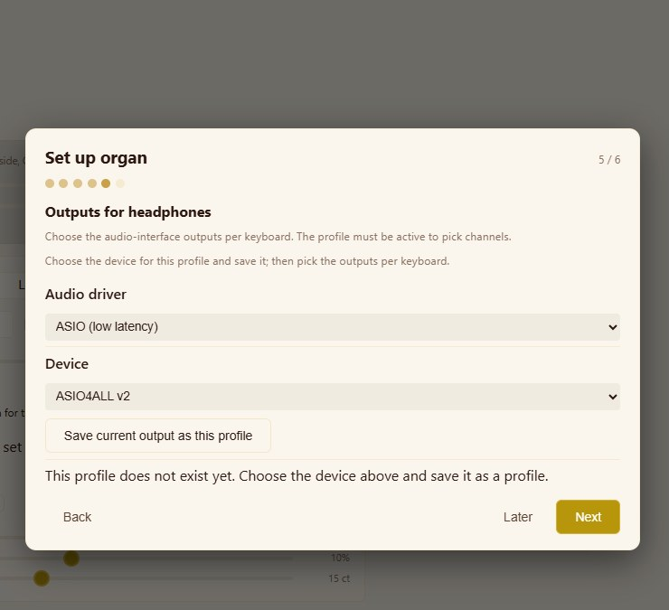
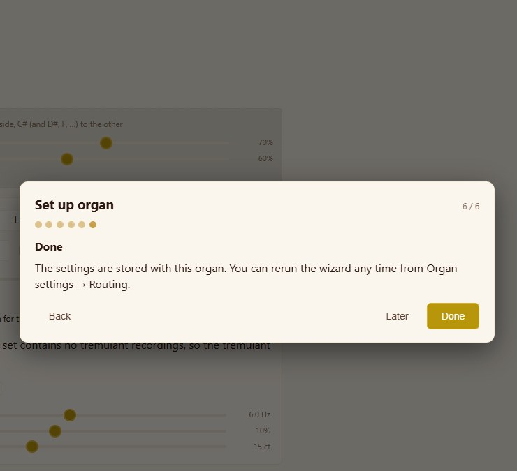
7. Organ Settings
All settings that belong to the loaded organ are stored with that organ. At the top are five tabs: Sound, Crescendo, Stop order, Routing and All; the last one puts all blocks below each other.
Sound
The first block holds the master settings:
- Volume: the master volume of this organ.
- Temperament: “Original” plays the pipes as they were recorded. Other temperaments (equal and historical temperaments) retune the pipes based on the measured pitch of each recording. Below the choice you see how many pipes have a measured pitch. With Custom temperament… you set the deviation per note in cents yourself. Load Scala file… reads a .scl file (the worldwide format for microtonal and historical temperaments from the Huygens-Fokker Foundation); the loaded temperament appears in the list and is kept for later sessions.
- Fine tuning: everything together higher or lower, in cents.
Reverb controls the reverberation. If the set already has the church acoustics in its recordings, that is stated (with a button Back to the recording (reverb off) to switch the extra reverb off): extra reverb is then a matter of taste. You choose between Algorithmic (a calculated reverb with RT60, delay, damping and room size, also as a preset) and Impulse Response with an impulse response (IR) of your own. With Mix you determine how much reverb you hear.
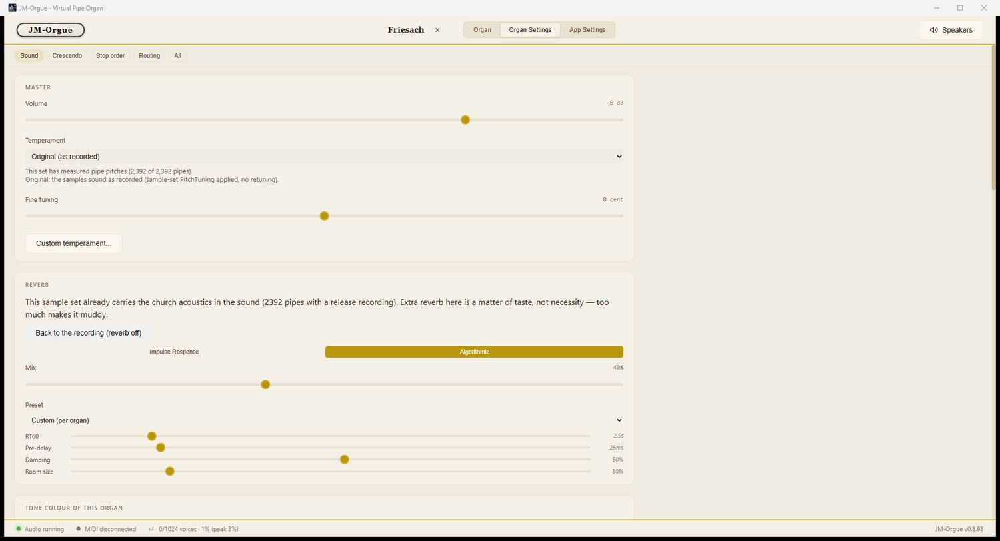
Tone colour of this organ is a tone control of its own per organ; the correction for your headphones or speakers is separate, in the app settings. The wind model lets the organ breathe: a chord with many stops lowers the wind pressure, as in a real organ, and flutes and reeds react to it differently. You choose the number of wind groups (which divisions share the same bellows) and, per group, the bellows size, the damping, the maximum pressure drop and the character of the wind.
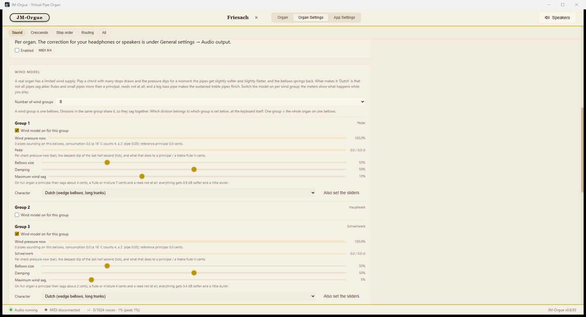
Background sounds shows the continuous sounds the set contains, such as the blower and room noise. You set the volume, switch the Blower on or off and can enable the key action noise (clicking keyboard). The key action is off by default because it takes a lot of memory and requires reloading the organ.
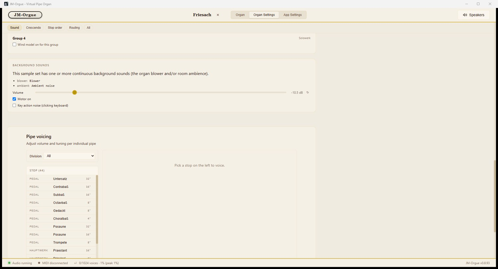
At the bottom is the pipe voicing: choose a stop on the left and adjust the volume and tuning of each individual pipe. To shift the whole stop in one go, set the sliders to the desired value and press Apply to all pipes — every pipe of that stop then receives the same volume and tuning adjustment.
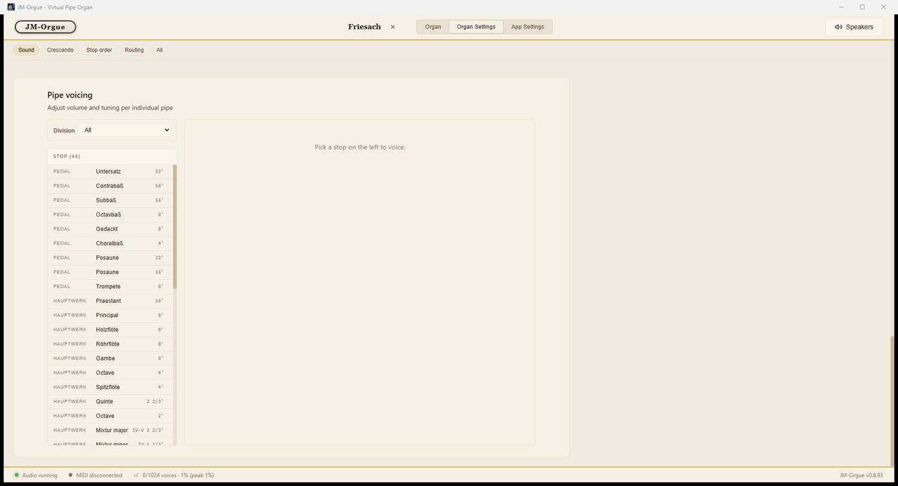
Crescendo
The general crescendo draws more stops step by step as you move a crescendo pedal. You decide yourself which stops go in which step:
- Enabled switches the crescendo on; Steps is the number of steps.
- Auto-fill fills in a proposal that suits the stops of this organ. With the options below you decide whether couplers take part, whether colour stops (sesquialtera, cornet, tierce), 32′ reeds and chamades take part and whether the octave couplers only come in at the tutti. Clear empties the matrix.
- In the matrix, a click on a cell switches that stop on or off in that step; Shift+click sets it for all steps from that step on.
- Learn pedal links your crescendo pedal; at the bottom you can also enter channel and CC number by hand.
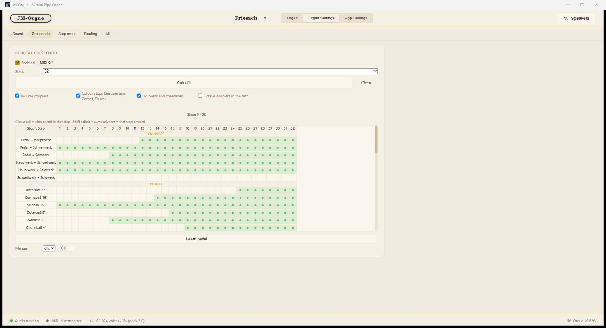
Stop order
Here you decide the order of the stops in each division. Drag a stop by its handle to move it. For each stop you see the pitch and the family (the colour of the name). With the arrows you change the order step by step, and Reset restores the order of the set.
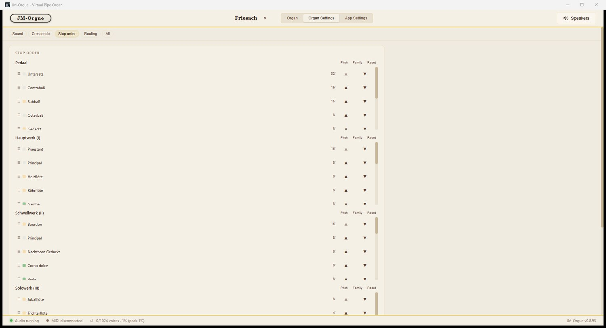
Routing
This tab connects your organ to your equipment. At the top there is a block per keyboard:
- Channel: the MIDI channel the keyboard listens to (“All” = every channel). Learn determines channel and range by playing the lowest and then the highest key.
- Transp: transpose in semitones. Range: lowest and highest key. Short octave: for sets with a short bass octave.
- Swell box: switches on the swell box of this keyboard; buttons then appear to learn the pedal, to set the minimum volume and the cut-off frequency of a closed box. The pedal can also be learned straight from the organ screen: right-click the green LED strip next to the manual name — or hold it for 2 seconds on a touch screen — and the same “pedal closed / pedal open” dialog opens.
- Wind supply: which wind group the keyboard belongs to.
- Pan and Outputs: the place in the stereo image and the output channels of your audio interface the keyboard sounds on. Two consecutive outputs form a stereo pair; a single channel sounds mono.
- C/Cis: spreads the pipes over two sides, like the C and C-sharp chests of a real organ; the global strength and fall-off are in the block above it.
- Tremulant LFO: if the set has no real tremulant recordings, the program calculates the tremulant. You set speed, amplitude and pitch here.
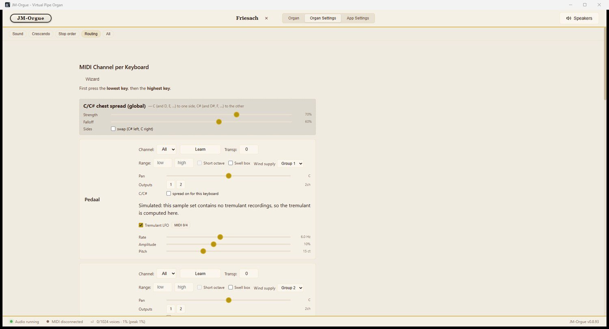
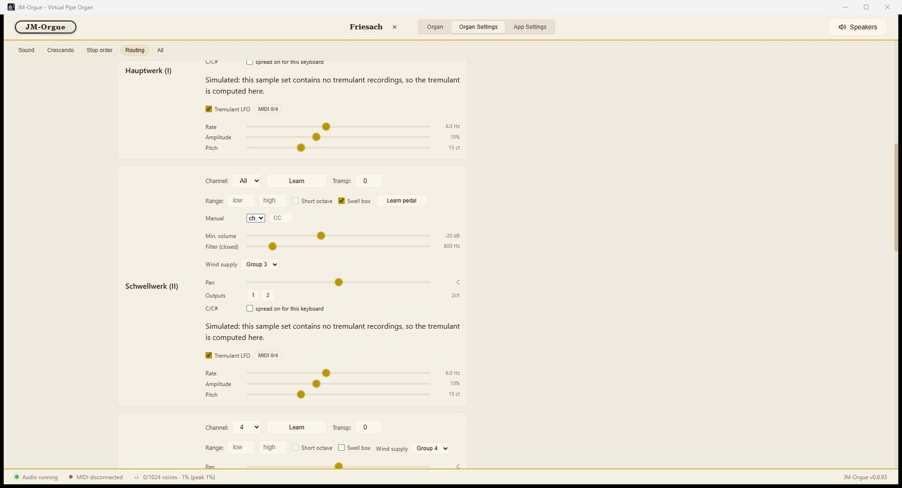
Below that is Background sounds audio output: for each kind of sound you choose which outputs it uses. Blower is the blower sound; Ambient noise and action clicks applies to the room noise and the clicks of stops and keys; sets with effect stops (cymbelstern, nightingale and the like) and tremulant noise get a row of their own. This matters mostly with a set-up of more than two outputs, where the keyboards sound on other channels than the default 1–2. Directly below:
- Continuous keyboard: keys outside the recorded range of a stop play the nearest pipe, shifted to the right pitch, instead of staying silent. A 61-note keyboard thus keeps playing on a set with fewer notes. Bass and treble halves of a divided stop (Trompet 8 B/D, Cornet D, Mixtuur Bas …) stop at the split point — the treble carries on at the top, the bass at the bottom, but they never overlap.
- Automatically retune pipes: retunes the pipes based on their measured pitch, while keeping deliberately floating stops. On by default.
- Pitch correction: everything together higher or lower in cents (Zero resets it).
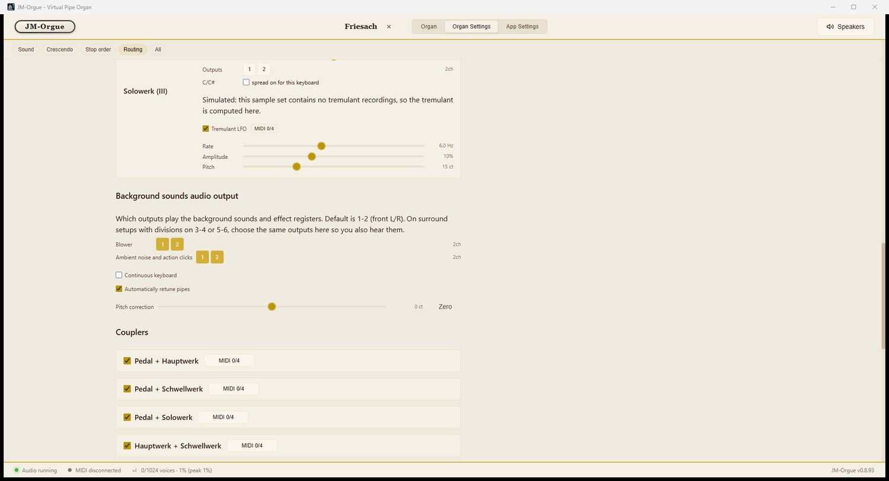
Further down are Couplers (switch on or off, with a MIDI button per coupler) and Extra couplers: couplers that are not in the sample set but follow from the keyboard layout; tick what you want and they appear straight away on the coupler bar. MIDI bindings is one list of all MIDI bindings of this organ, which you can adjust, remove or add by hand there. At the bottom, Open .mid lets the organ play a MIDI file.
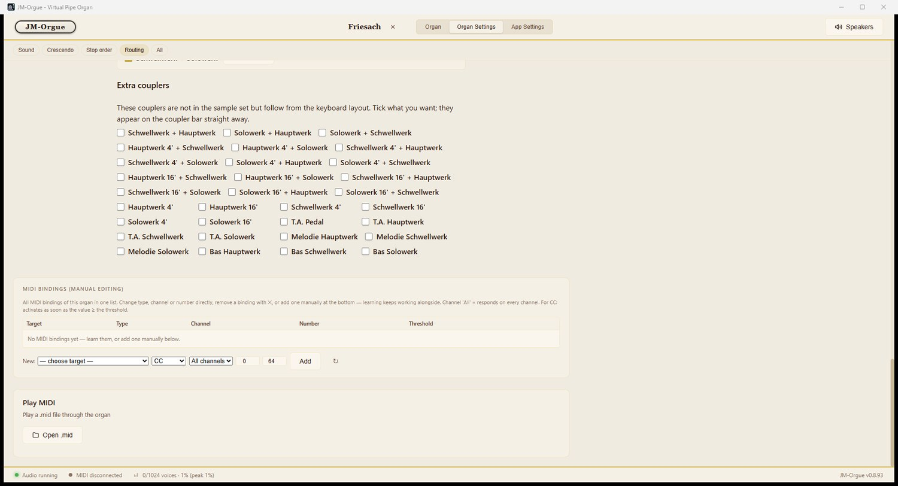
8. App Settings
These settings apply to the whole program. The tabs are Audio output, Sample fix, MIDI, Learn buttons, Display and Update and feedback.
Audio output
- Audio driver and device: for the lowest latency choose ASIO (for example the driver of your audio interface); WASAPI works with the standard Windows sound card. The “Current” line below shows what is playing now.
- Test signal: click a channel number to send sound to exactly that output, so you hear which plug belongs to which loudspeaker.
- Polyphony and Calculation cores for mixing: the maximum number of sounding pipes and the number of processor cores the mixing work is spread over. The default choice fits your computer; the load meter shows the effect.
- Play stereo samples in stereo: keeps the stereo image of stereo recordings. Off means a mono mix and halves the memory use of such sets.
- Start buffer per recording (new in this version): how much of each pipe recording is in memory straight away: 200 ms, 300 ms, 500 ms, 1 s or 2 s (default). A shorter buffer saves a lot of memory and loading time; the rest is loaded while you play. The choice takes effect after the organ is reloaded.
- Buffer size: smaller means less latency but is harder on your computer. Apply activates the choice.
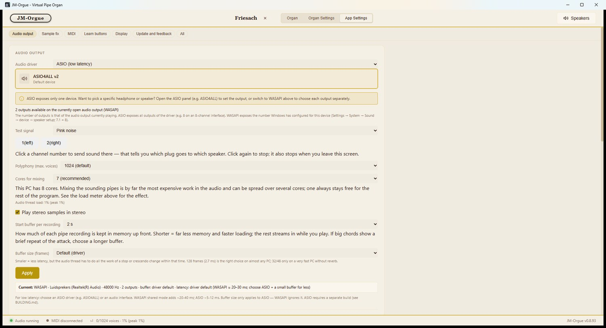
Output profiles store two complete output settings, for example loudspeakers via ASIO and headphones via WASAPI, including the channel choice per keyboard. Choose the output you want, click Save current selection at Speakers or Headphones, and then switch with the Speakers button at the top right or with a learned MIDI button. The profile that is active now is marked.
Correction for headphones or speakers applies a tone correction to the output itself (not to the organ): choose which profile it applies to, switch it on and choose a preset from the AutoEq list, or import or export a correction of your own.
Below that are the options to start the program automatically with Windows, to load the last opened organ automatically, to let the cross on an extra screen close the whole software and to restore the last registration. The Automatic MIDI archive records in the background everything you play, as a .mid file per session: it starts at the first note and stops after a silence.
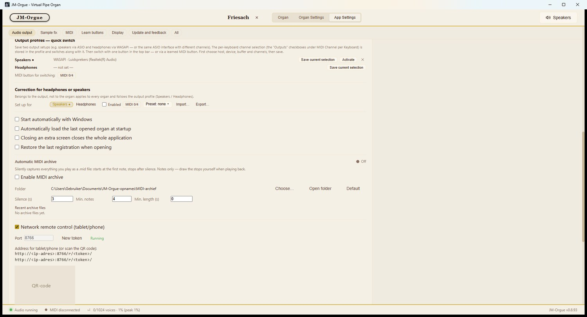
With Network remote control (tablet/phone) you control the organ from a tablet or phone on the same wi-fi network. The program shows an address and a QR code to scan, and you choose which parts and which divisions appear on the external screen. The first time, Windows Firewall asks whether JM-Orgue may receive connections: choose “Allow access” for private networks.
At the bottom is the sample rate. It follows the sound card itself: under ASIO you set it in the driver's panel, under WASAPI in the Windows sound settings.
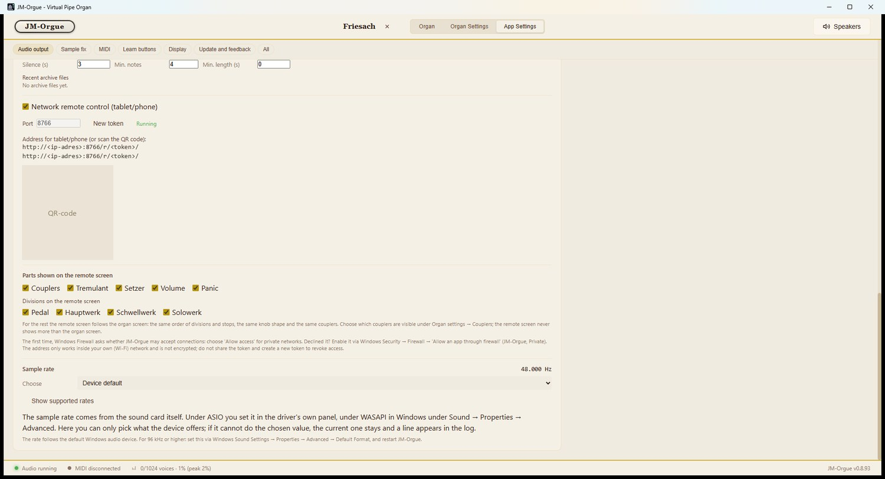
Sample fix
Two tools to tidy up the samples of the loaded organ. Leading silence finds and cuts silence at the start of the samples (you set the silence threshold in dB and the lead-in you want to keep yourself); Loops finds a good sustain loop, bakes in a crossfade for a seamless transition and writes the loop points into the file, with the option to do this only for files without a loop. With Scan you first look at what would change. The originals are first kept in a folder _backup before the files are overwritten.
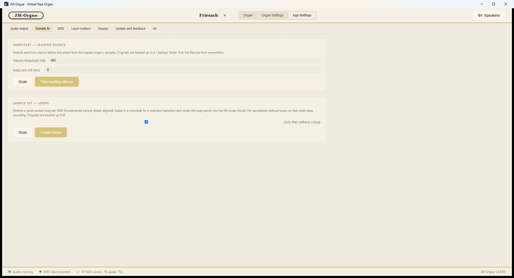
MIDI
MIDI Input shows the connected MIDI devices (with Refresh devices you search again); under Bluetooth MIDI you search for wireless devices with Scan. Feedback (MIDI out) makes your console light up with the registration: choose the protocol (stop lamps via Note On/Off, a Hauptwerk text display or a Johannus/Content console), the MIDI output, the channel and the base note. Each stop then automatically gets a note number from the base note, or you learn the real console button per stop with Learn per stop….
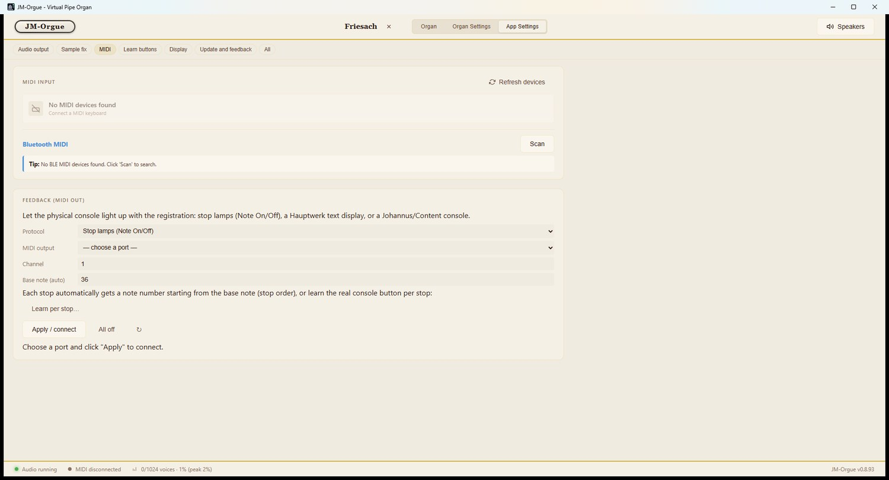
Learn buttons
Here you learn the fixed console buttons (pistons): tuner, SET, preset steps, memory levels and shutting down the computer. The digit buttons 0–9 you learn on the setter bar itself (right-click or hold for 3 seconds).
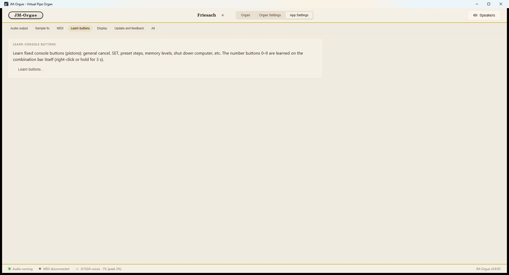
Display
Choose the language of the program (Nederlands, English, Français, Deutsch, Polski, Italiano and Español) and the look: five ready-made colour presets (Basic, Classic wood, Modern minimal, Night and Evening), or put together your own colours, give them a name and export them. Below that you adjust the font, size and weight of the stop text, and the background.
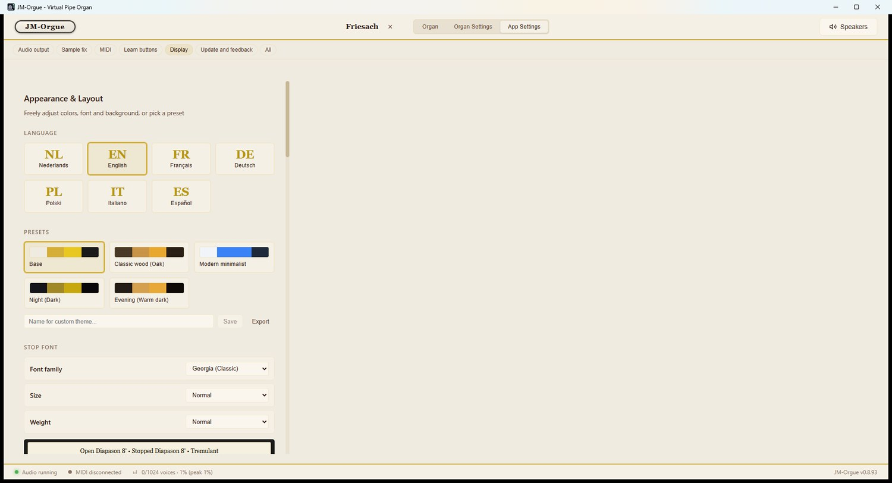
Update and feedback
Here you find the version number, the credits for the headphone presets and loudspeaker data used, and the buttons Send feedback…, Via GitHub (issues) and Check for updates.
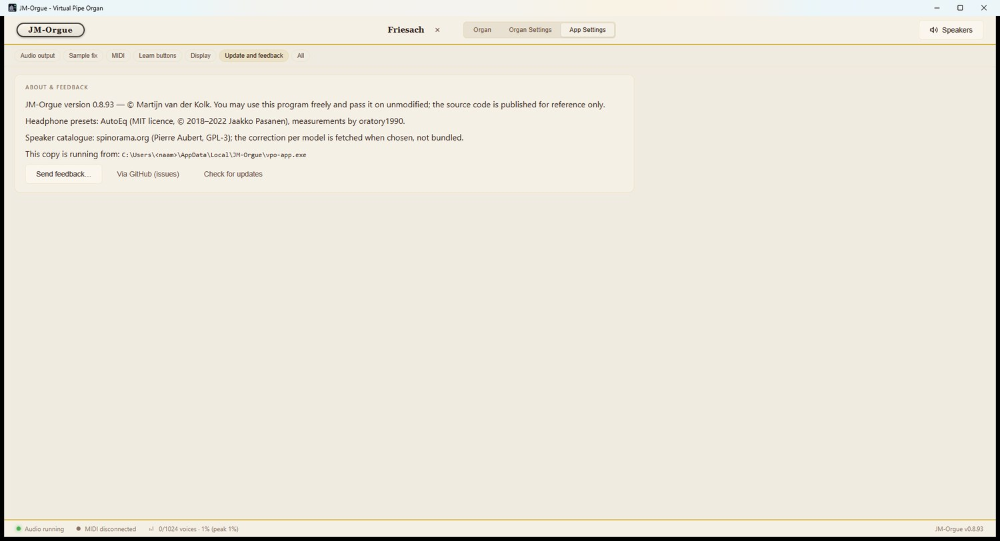
9. Acoustic configuration of a set
An organ definition can refer to an extra file, JM-ACOUSTICS.json, that describes the acoustics of the set: swell boxes attached to a rank instead of to a keyboard, impulse responses for the reverb, mixing routes and outputs. If your set has such a file, you recognise it by an extra block in Organ Settings → Sound.
- The program reads the file and checks it: the file size, whether all references are correct, whether the paths stay inside the organ folder and whether the pipe bindings fit the loaded definition. If something is wrong, the organ simply plays with the regular definition and the block says why the configuration was not loaded.
- Swell boxes per rank: ranks that the file puts in a box get a swell box and swell pedal of their own, independent of the keyboard they are played on. A rank used by two divisions thus always follows the same box. You learn the pedal under Routing (Learn pedal) or in the wizard.
- Impulse responses from the set are listed under the block, with channels and duration. With Use as reverb you adopt one as convolution reverb. The role of the channels in such recordings is not defined; the program uses the first two as a stereo pair.
- Mixing routes, output buses and effect transitions from the file are for now not applied automatically; the regular definition remains in charge.
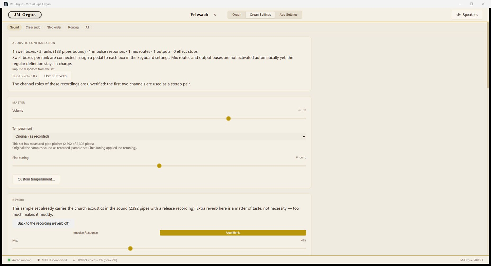
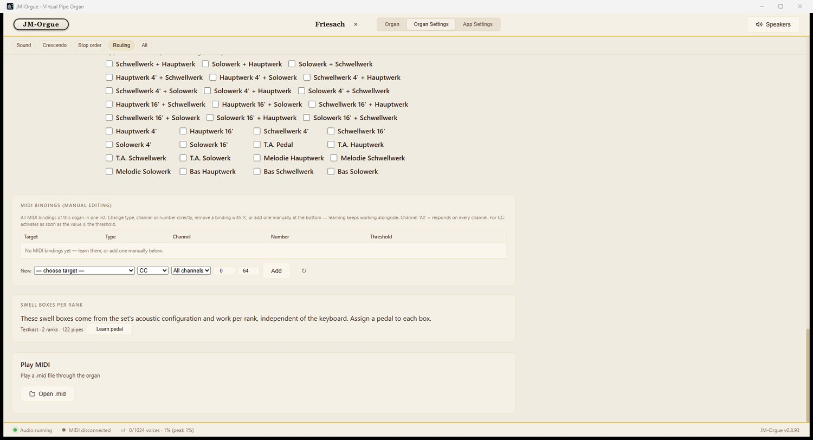
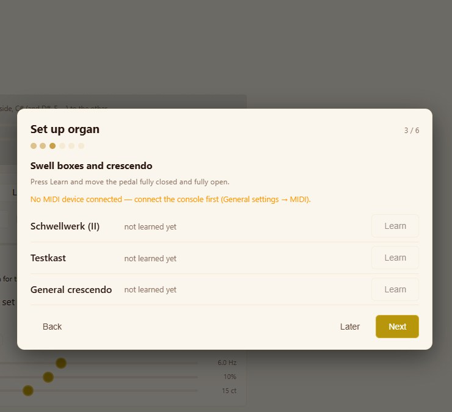
10. Keyboard shortcuts and tips
| Key | Function |
|---|---|
| F1 F2 F3 | Organ, Organ Settings and App Settings. |
| F11 | Full screen (console mode) on or off. |
| Esc | Full screen off. |
| Right-click or hold 3 s | On a button of the setter bar: link that button to a console button (MIDI learn). |
| Double-click on the volume | Master volume back to the default value. |
| Card held for 3 s | In the library: search the photo of that card again. |
- All settings are stored with each organ, also when you close the organ or quit the program.
- For a fixed console: switch on Start automatically with Windows and Load last opened organ automatically, and use console mode.
- With a set-up of more than two outputs: choose the outputs per keyboard under Routing, and then the same outputs for the background sounds.
11. Troubleshooting and feedback
| Problem | What you can try |
|---|---|
| No sound | Is the blower on? Does it say “Audio active” at the bottom? Is the right device set under Audio output, and do the outputs per keyboard match your audio interface? Use the test signal to hear the outputs. |
| The keyboard does not react | At the bottom it says “MIDI not connected” as long as there is no MIDI device. Check App Settings → MIDI and the MIDI channel per keyboard under Routing. |
| The organ sounds out of tune | Check that Automatically retune pipes is on, and under Sound choose the temperament “Original” or the temperament you want. |
| Crackling or stuttering | Lower the polyphony, draw fewer stops, switch the reverb off or choose a larger buffer. A short start buffer needs a fast drive; otherwise choose a longer one. |
| Too little memory | Choose a shorter start buffer, switch stereo samples off, or switch off listening positions you do not use. |
| Background sounds or effect stops are not heard on the right speaker | Under Routing, at “Background sounds audio output”, choose the same outputs as for the keyboards. |
Send feedback… (App Settings → Update and feedback) creates a message with your report and the log files of the last sessions, so the developer can see what happened. You can also post your report on the project page on GitHub.